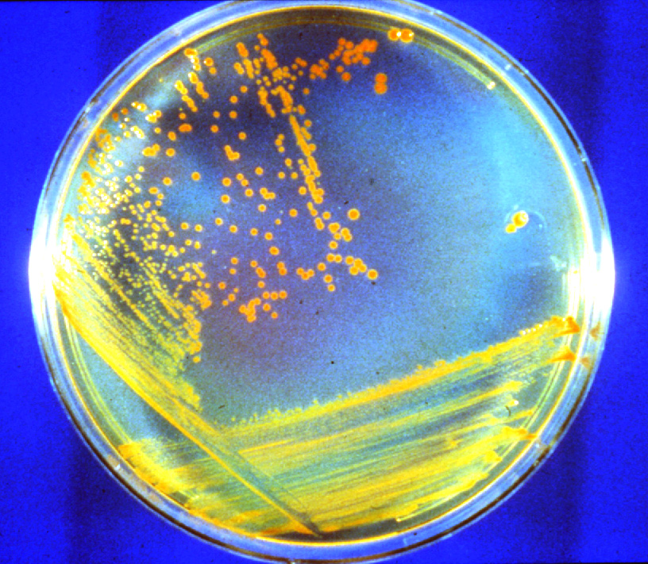

La bacteria del experimento en Marte
Según una nueva investigación, debajo de la superficie de Marte hay bacterias que probablemente permanezcan escondidas después de millones de años. El hallazgo espacial indica que encontrar microorganismos en el planeta rojo es, tal vez, más fácil de lo que pensábamos hasta ahora. Esto es lo que sabemos de Conan, una de las bacterias que habitó Marte.
Entre los microbios que se enviaron para experimentar la posibilidad de vida en Marte estaba Conan. Llamada como el famoso general Mongol, la bacteria es capaz de sobrevivir a altos niveles de radicación y a condiciones extremadamente difíciles.
Las pruebas de defensa espacial no son sólo mecánicas. A principios de este octubre, los resultados de una prueba de defensa espacial demostraron éxito en su misión. La nave DART logró desviar la órbita de un asteroide, lo cual podría ser de mucha ayuda en caso de que un asteroide se aproxime a la Tierra.
Sin embargo, los grandes impactos no son las únicas forma de defensa planetaria. De los seis microorganismos que se mandaron en la misión espacial, sólo Conan tuvo resultados sorprendentes gracias a su alta resistencia a la radiación en Marte. Esta característica la hace capaz de sobrevivir hasta 280 millones de años en superficie marciana y puede ser de gran utilidad, pues analizar su composición genética podría ayudarnos a crear armas de protección química.
Pese a los grandes avances que significó este hallazgo, también llevó al equipo de investigadores a darse cuenta que la contaminación terrestre debido a las misiones espaciales a Marte es inevitable.
Los investigadores descubrieron que un microbio robusto, el Deinococcus radiodurans (apodado "Conan la Bacteria"), es especialmente adecuado para sobrevivir a las duras condiciones de Marte. En los experimentos, Conan sobrevivió a cantidades astronómicas de radiación en un entorno gélido y árido.

Las condiciones de Marte son extremas: El planeta es árido, muy frío (está a una media -63 grados Celsius en latitudes medias) y está constantemente bombardeado por una intensa radiación cósmica y solar. Para comprobar si la vida podría sobrevivir en estas condiciones, los investigadores determinaron los límites de supervivencia de la vida microbiana a la radiación y después sometieron a seis tipos de bacterias y hongos terrestres a unas condiciones similares. Así, observaron que algunos microorganismos terrestres podrían sobrevivir en Marte durante escalas de tiempo geológicas de cientos de millones de años.
En estudios anteriores, los investigadores habían descubierto que la bacteria Conan, cuando está suspendida en líquido, puede sobrevivir a 25.000 unidades de radiación (o "grises"), el equivalente a unos 1,2 millones de años justo debajo de la superficie de Marte. El nuevo estudio descubrió que cuando la bacteria se seca, se congela y se entierra profundamente -lo que sería típico de un entorno marciano- podría soportar 140.000 grises de radiación, una dosis 28.000 veces superior a la que mataría a un ser humano.